Simple, current makeup and hair advice for busy moms.
Jaime McLaughlinMakeup artist. Mother of four.
Before you start
You don’t need 97 products. You need the right few.
This is my little golden makeup bag: quick wins, short how-tos, my pro tips and my top three picks for everything, from everyday faces to weddings.
How this guide handles facts
Advice from a doctor’s group or another outside source has a small number that points to the sources at the back. Product details marked “per the page” come from each product’s retailer page, read on October 19, 2026. Everything else is my own experience as a makeup artist and hairstylist.
This guide is for general information. It is not medical advice. If you have a skin or scalp condition, allergies, or a reaction to any product, stop using it and talk with your doctor or a dermatologist. Some product links may be affiliate links.
·SourcesWhere the advice and product details come from00
Start here · how every page works
Start here.
Every page works the same way, so you can find what you need fast and get ready in less time.
1
Quick winThe one thing that makes the biggest difference. Do just this, and you’re ahead.
2
How toA few short steps, plus how to pick your color.
3
Pro tipWhat 20 years as a makeup artist has taught me.
4
My picksMy top three, and why I love each one.
In a hurry?
Read my current makeup bag (Chapter 7)
Follow the order of application (Chapter 7)
Shop my picks: shopmy.us/shop/jmclaughlin
Expert advice is marked “What the experts say”
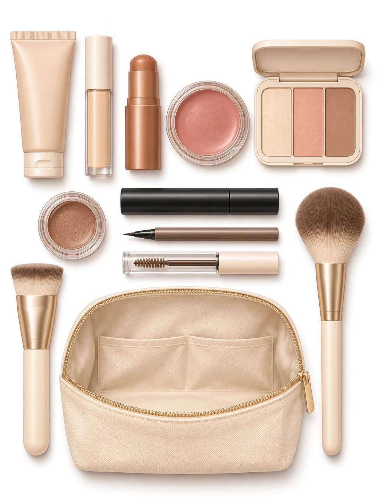
01
Chapter 1 of 8
Before You Start
There is another way.
A little why before any product: why getting ready is worth your time, where your money matters most, and the skin care that makes everything else work.
In this chapter
Hi, I’m Jaime
Why getting ready matters
Where to spend, where to save
Start with your skin
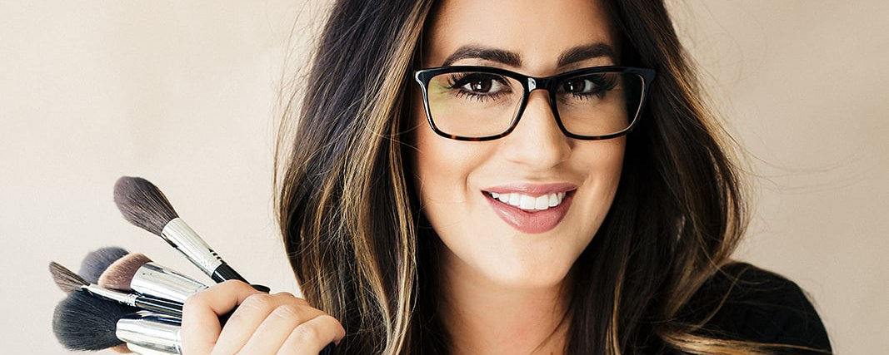
Makeup sits on top of your skin. Start there.
The one thing to remember
Before You Start
Hi, I’m Jaime.
Getting ready was my career for a long time. It’s also the one thing that has carried me through the hardest seasons of my life. So before we talk products, here’s my story.
2006I started doing hair and makeup for weddings.
2006 to 2017Hundreds of weddings, events and red carpets, from five-year-old flower girls to seasoned grandmothers.
2017My fourth baby, and total burnout. I stopped.
2018I started posting about beauty on Instagram and launched The Ultimate Beauty Guide.
2018 to 2023I shared online, taught webinars and launched The Confident Mom Method, the course that goes with the guide.
2021I opened my own beauty studio.
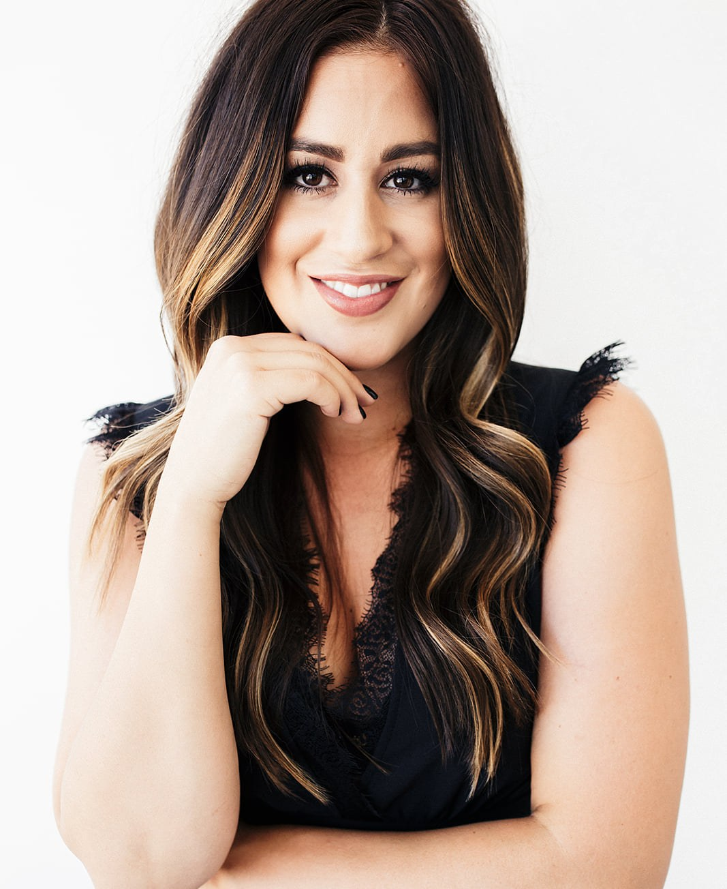
By 2017, I was SO burnt out from doing events all weekend and being home with the kids all week. I had to stop. So I did. I knew I was done working outside the house, but I wasn’t done working. I wanted to do something, and I had no plan when I quit. That something became everything you see above.
The studio was amazing, but the landlord was a nightmare. I had too much on my plate, the stress was too much, and I was drowning. I had to start shutting things down.
And then I woke up one day, and half of my face was paralyzed.
I had Bell’s palsy. I spent two years trying to heal it, and it was permanent. I found a surgeon and had surgery, and it’s been a hard road ever since.
Before You Start
Why getting ready matters.
Getting ready was my career. Makeup was my career. Hair was my career. And my face was my biggest advertisement.
If my hair and makeup were on point, I knew people would trust my recommendations. So after Bell’s palsy, I lost my identity. I didn’t know who I was without the face I’d known my whole life. I’ve had to work my way back to posting, and back to wanting to be seen again. It’s still hard.
But the one thing that makes me feel better, every single day, is getting ready. Doing my hair, doing my makeup, getting dressed. It’s such an important part of my day and my confidence. I’ve always used it as a tool to help me through hard times: to perk me up, to make me feel better, and to give me the boost I needed while I was raising babies.
“Beauty isn’t fluffy. For me, it is tied to how I feel, mentally and emotionally.”
Why it matters for you, too
Getting ready early in the day creates a spark that carries confidence and productivity into the rest of it. Not because of what people think of you, but because of how YOU feel. Once it’s a habit, it’s automatic, just like brushing your teeth. So when that small whisper says it’s selfish or vain, push it back.
That’s why I made this guide. It’s my little golden makeup bag: the quick wins, the pro tips and the products I recommend. I hope it gives you that boost, too.
xx, Jaime
For more on making getting ready a daily habit, see Chapter 6 of my companion workbook, The Woman Beyond Mom.
Where to spend, where to save
Spend
Foundation first. It lets the rest of your makeup stay put. Good tools. My last blow dryer was $100 and lasted seven years. Regular haircuts. They keep your hair easy to style.
Save
Not everything has to be expensive. Some of my favorite picks are drugstore buys, like L’Oréal Voluminous mascara, the e.l.f. Brow Lift and NYX Butter Gloss. Look for the “Drugstore” tag.
Before You Start
Start with your skin.
Makeup sits on top of your skin. When your skin is ready, everything goes on smoother and lasts longer.
Quick win
Moisturize, then wait a few minutes before foundation.
Moisturize, and let it soak in for a few minutes.
Add sunscreen after moisturizer and before makeup.
Exfoliate gently, so foundation goes on smooth.
Take it all off at night, eye makeup included.
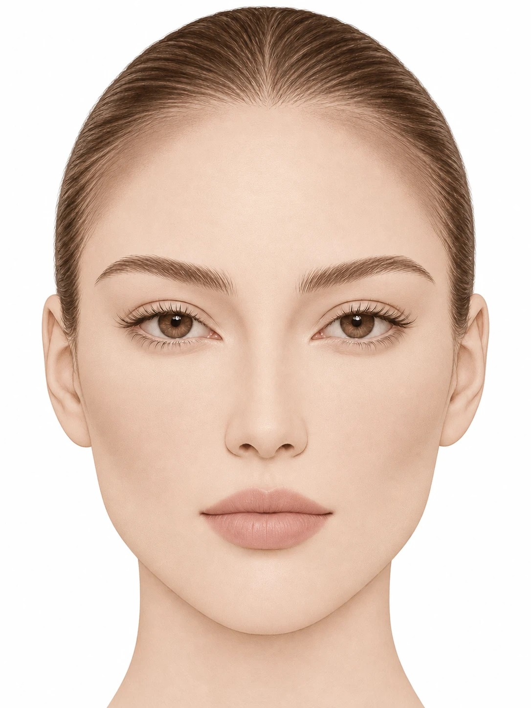
Pro tip
Your foundation will only take you so far. If your skin is in bad shape, no foundation will give you the coverage you want. Skin care is important!
What the experts say: the American Academy of Dermatology recommends a broad-spectrum, water-resistant sunscreen with SPF 30 or higher, about 1 teaspoon for your face, reapplied every 2 hours.0 It warns that scrubbing can irritate your skin, and says to remove makeup at night with an oil-free remover and a gentle cleanser.0,0
My skin care picks
Cleanse
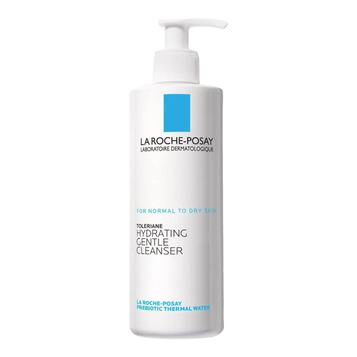
La Roche-Posay
Toleriane Hydrating Gentle Cleanser
For washing your face at night, after your makeup comes off.
Exfoliate
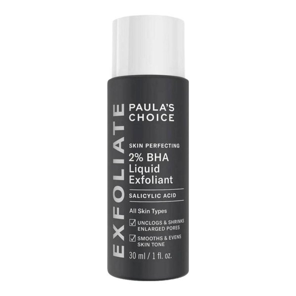
Paula’s Choice
Skin Perfecting 2% BHA Liquid Exfoliant
A leave-on liquid exfoliant, so there’s no scrubbing.
Moisturize
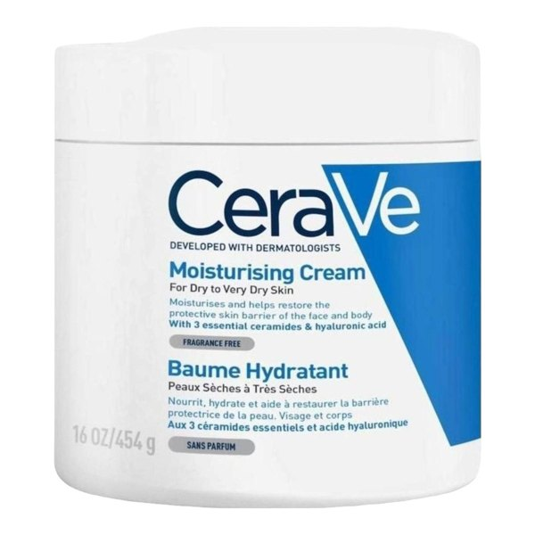
CeraVe
Moisturizing Cream
Moisturize, then let it soak in for a few minutes before foundation.
Foundation, concealer, contour, bronzer, blush, highlighter and setting: how to apply each one, how to pick your color, and my top picks.
In this chapter
Foundation
Find your shade
Concealer
Bronzer and contour
Blush
Highlighter, and where it all goes
Setting powder and spray
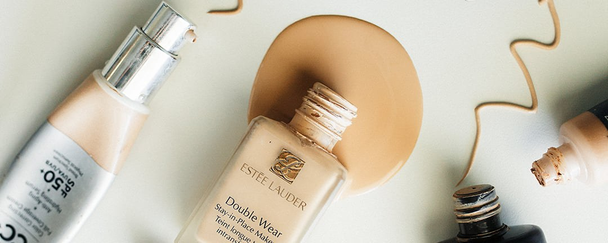
Foundation is called foundation for a reason.
The one thing to remember
The Face
Foundation
Foundation is called foundation for a reason. Invest here first: it lets everything else stay put.
Quick win
Use a brush or a damp sponge. Never your fingers.
Moisturize first, and let it soak in.
Apply with the Sigma F80 kabuki brush (my #1) for full coverage, or a damp beauty blender for an even, lighter finish.
Build as you go. Add more only where you need it.
Keep your fingers out of it. They give an uneven application, and the bacteria on your hands can cause blemishes.
Pick your finish: oily or textured skin, go matte. Smooth or normal skin, go luminous. Dry skin? Add a drop of facial oil to a matte foundation.
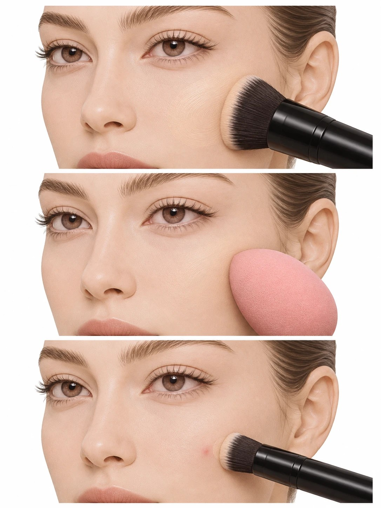
Pro tip
Heavy coverage doesn’t mean cake face! I wear it all year so my makeup lasts through work and kids hanging on me. Want less one day? Add a drop of tinted moisturizer to dilute it.
My picks
My #1
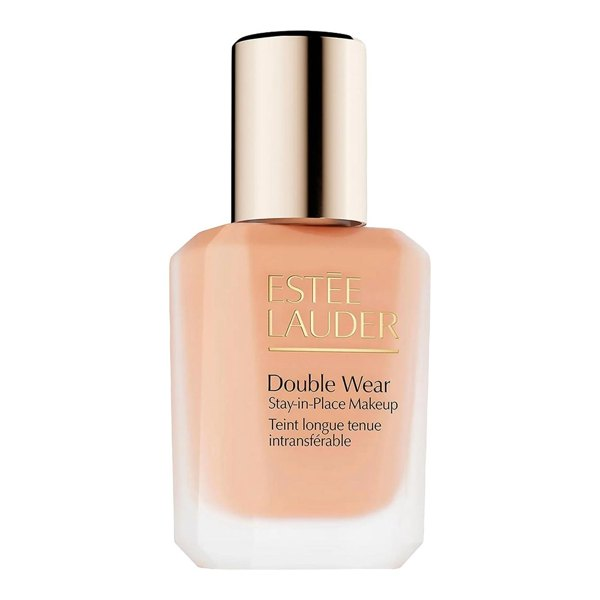
Estée Lauder
Double Wear Stay-in-Place Matte Foundation
Lasts ALL day, even into the night, and it covers acne scarring and oily skin. Damp sponge for lighter, the F80 for full.
Any skin type
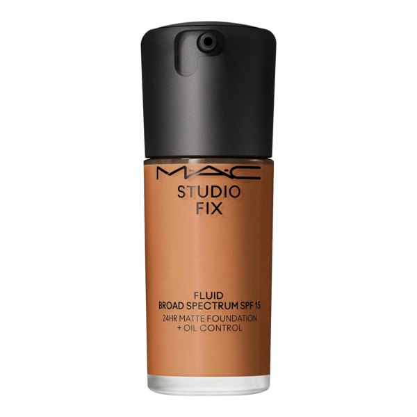
MAC
Studio Fix Fluid SPF 15
Like Double Wear, but not as heavy or matte. Photo-friendly, and it doesn’t settle into fine lines.
Radiant finish
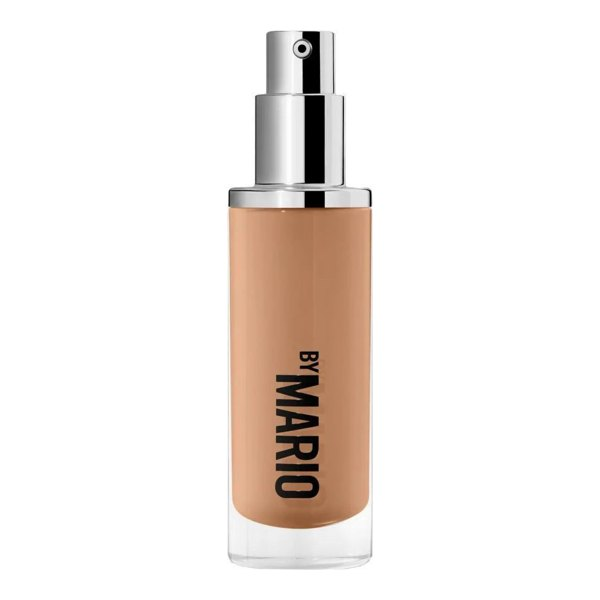
Makeup By Mario
SurrealSkin Liquid Foundation
Medium, buildable coverage with a radiant finish, for smooth, normal skin.
Concealer is simply a heavier-coverage foundation for covering imperfections and brightening under the eyes.
Quick win
Make a triangle under the eye, not a thin line.
Apply concealer in a triangle shape under each eye.0,0
Blend up toward your lashes with the pointed tip of a damp beauty blender, or the F80.
Set it with a little powder to lock it in.
Pick your color: go a little lighter than your skin. In MAC terms, I always recommend NC. I have NEVER used an NW on a single person in 20 years.
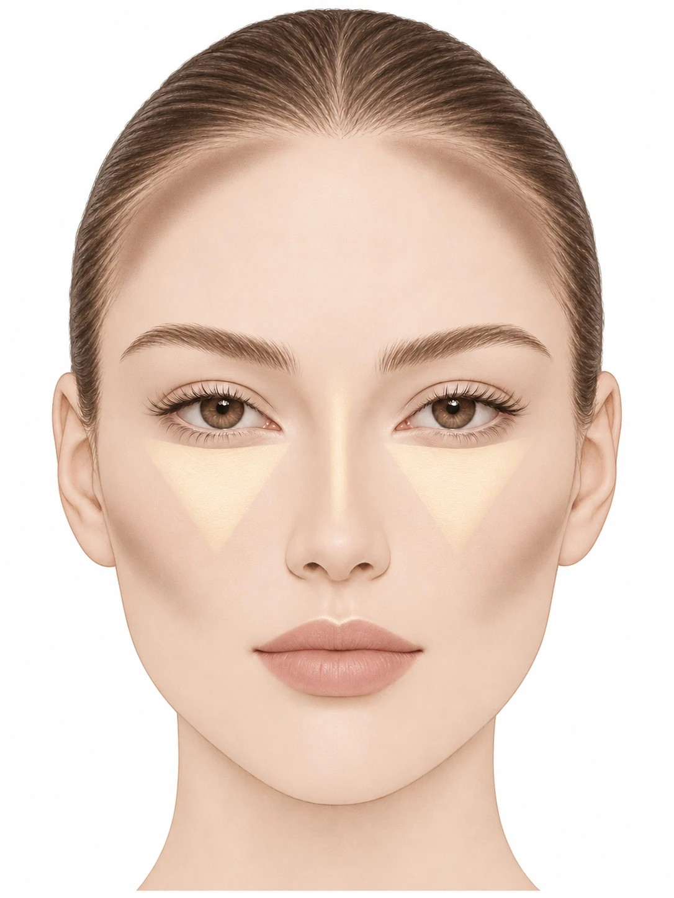
Yes: a triangle
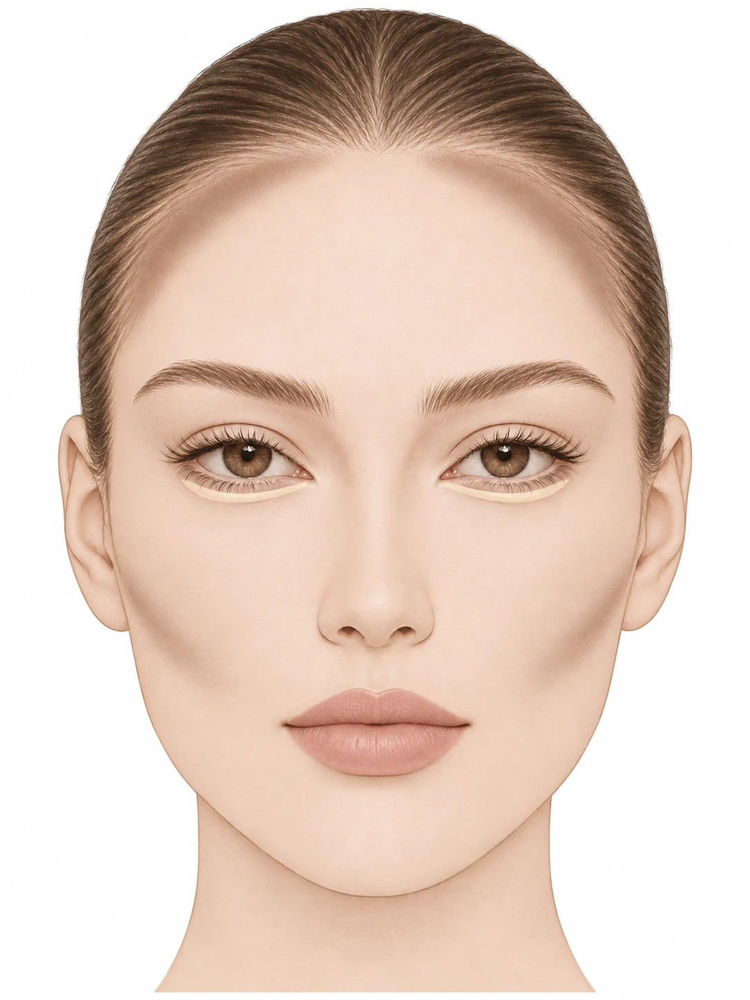
No: a thin line
Pro tip
A thin line right under the eye makes dark circles MORE noticeable. Bring it lower in a triangle, then drag a little down the bridge of your nose to brighten.
My picks
No creasing
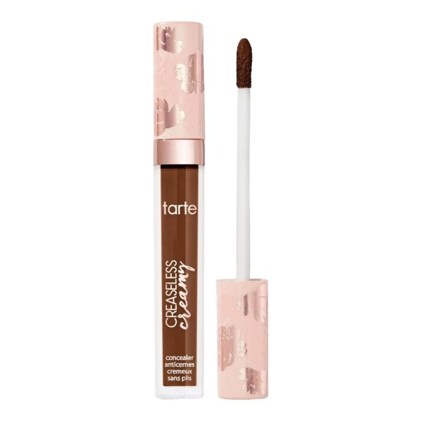
Tarte
Creaseless Creamy Concealer
Thick and creamy, and it sets well. Set it with translucent powder and it honestly lasts all day.
Dewy
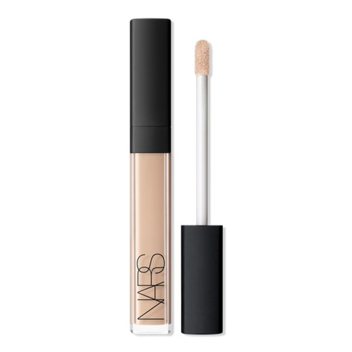
NARS
Radiant Creamy Concealer
A great basic concealer: less pigmented and more dewy. Best set with a powder.
In my bag now
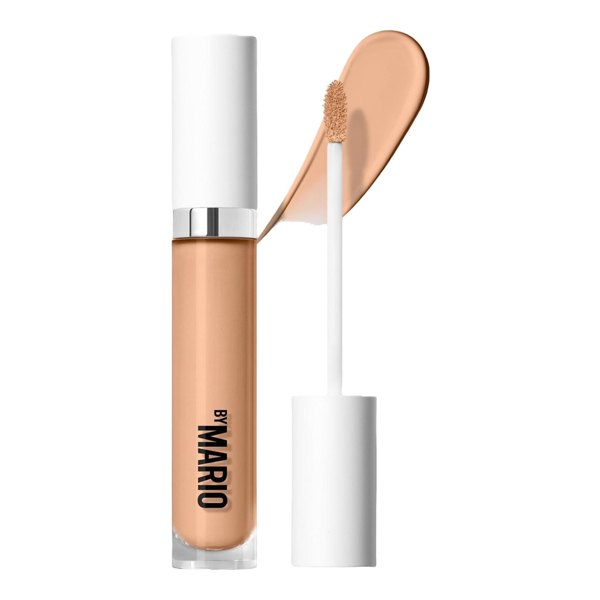
Makeup By Mario
SurrealSkin Awakening Concealer
Medium coverage and a natural finish, made with caffeine for the look of puffiness and dark circles.
They do a similar job. Contour is a matte shadow you cut into the cheek; bronzer is a warm, glowy tan.
Quick win
Bronzer on the cheekbones, contour in the hollow.
Dust bronzer on your cheekbones and the top of your forehead.
Cut contour into the hollow of your cheek with a heavier hand, and along the hairline.
Natural day? Just bronzer. Full face? Contour first, then bronzer.
Pick your color: swatch it on your jawline in daylight, just like foundation. Seeing too much orange? Use a contour instead of a bronzer.
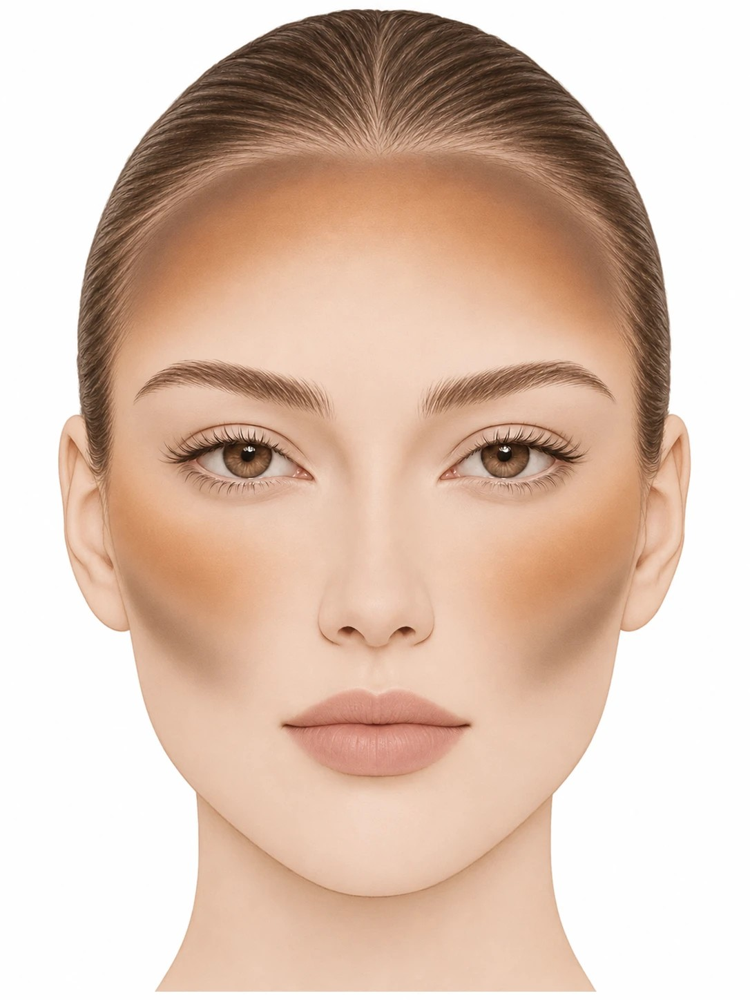
Pro tip
Make your own cream contour: buy your favorite foundation, like Double Wear, in a darker shade. It lasts all day and blends really well. Pop a little bronzer on top to set it.
My picks
Classic
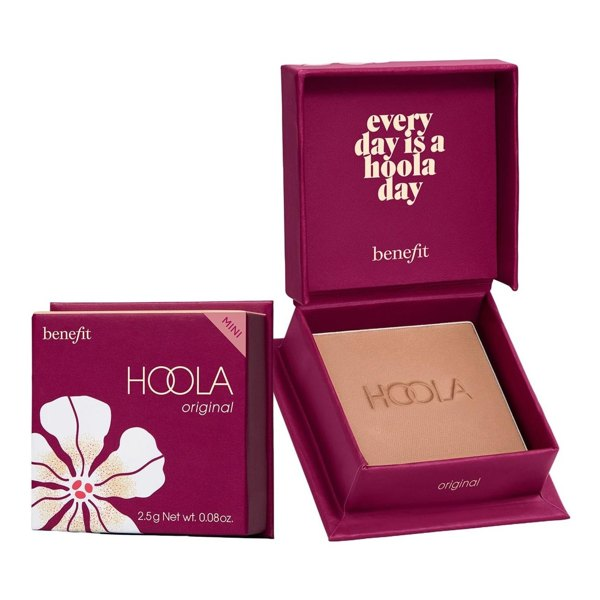
Benefit
Hoola Matte Powder Bronzer
A great, basic matte bronzer, perfect for light to medium skin. I prefer the original Hoola!
In my bag now
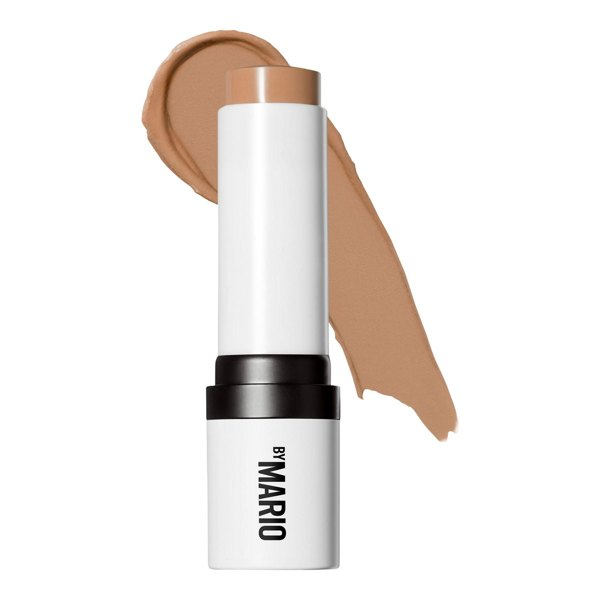
Makeup By Mario
SoftSculpt Shaping Contour Stick
A dual-ended cream contour stick with a natural matte finish. Buildable.
In my bag now
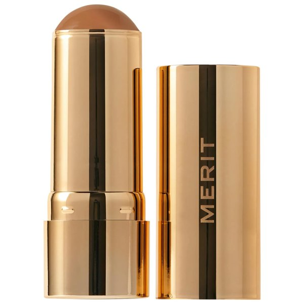
Merit
Bronze Balm Sheer Bronzer
A sheer cream bronzer stick with a natural finish. Mine is the shade Leo.
Highlighter catches the light where the sun would hit.
Quick win
Top of the cheekbone, bridge of the nose, cupid’s bow.
Highlighter: on top of the cheekbone, down the bridge of the nose and on the cupid’s bow. Powder with a brush; liquid or cream with a damp sponge.
Blush: on the apples, blended back into the bronzer.
Bronzer and contour: in the hollow of the cheek and along the hairline.0,0
Pick your color: champagne has warmth without being too gold, so it works for most skin.
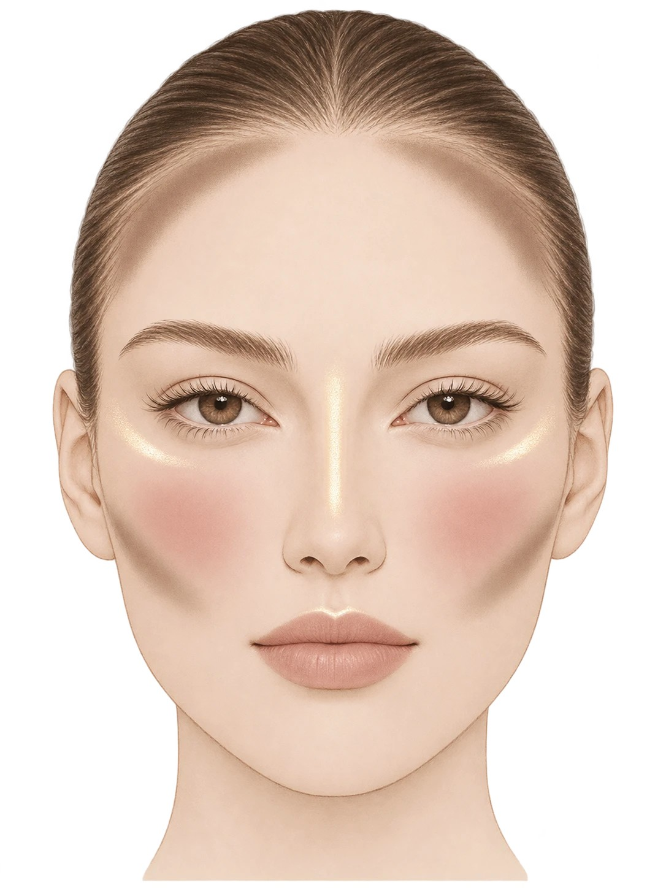
Pro tip
Not enough contour makes the face look rounder; too much looks dirty. And for a natural glow, add a drop or two of liquid highlighter to your foundation.
My picks
All year
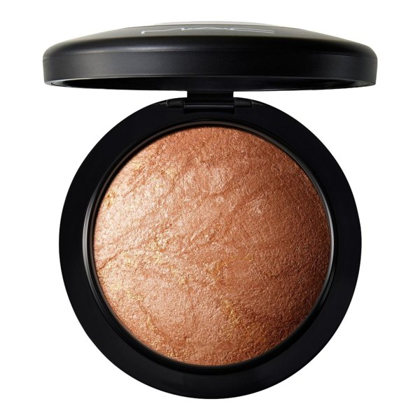
MAC
Mineralize Skinfinish in Soft and Gentle
Subtle and neutral, and it goes great on most skin tones. I wear it all year round.
Liquid
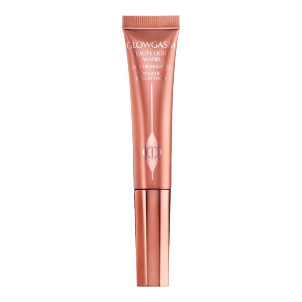
Charlotte Tilbury
Beauty Light Wand
A liquid highlighter wand with a radiant finish. Use it as a highlighter or a blush.
Liner can be tricky, and it’s not always necessary. But a little can really change the shape of your eye.
Quick win
Work from the outside in, a little at a time.
Start at the outer corner and work in, in small strokes. (You will get there!)
Hug the lash line with a thin line, and add a little wing at the outside if you like.
No liner? Use a dark shadow on an angled brush. Dry gives a soft line; a brush misted with setting spray gives a defined one.
Pick your color: espresso or dark chocolate for everyday, black for a wing.
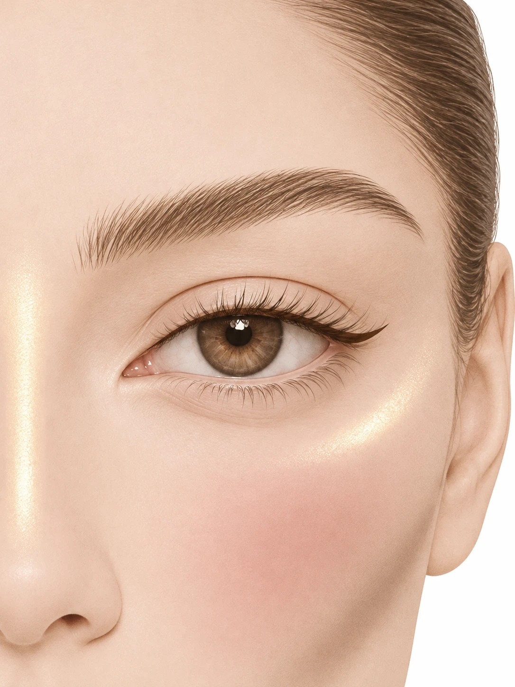
What the experts say: the American Academy of Ophthalmology says to apply eye makeup outside the lash line, away from the eye.0
Pro tip
I have smaller eyes that are close together. A little wing on the outside, plus a thin line hugging my lashes, makes them look bigger and farther apart.
My picks
Easiest
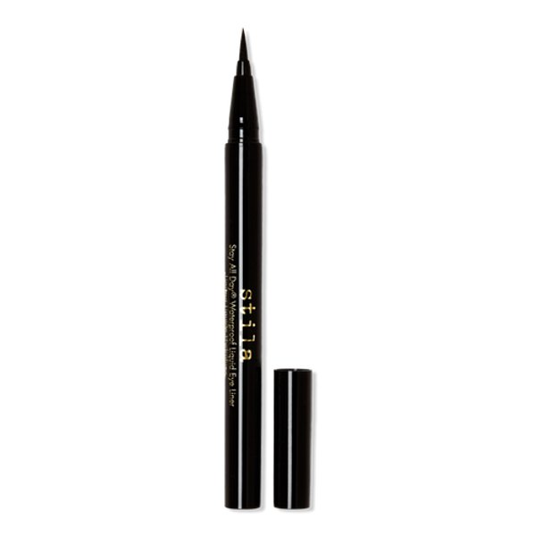
Stila
Stay All Day Waterproof Liquid Eye Liner
Lasts all day and goes on easily with a fine, marker-like tip. Waterproof, per the page.
Skinny tip
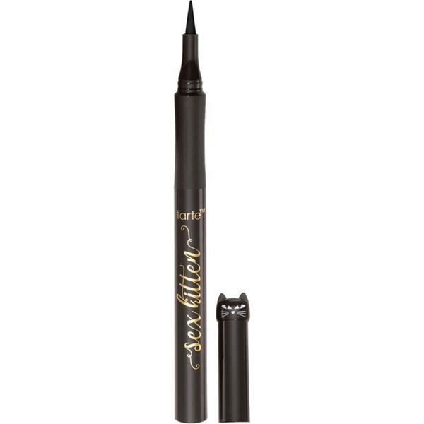
Tarte
Sex Kitten Liquid Liner
A super skinny felt tip for a thin line that hugs the lashes. Waterproof, per the page.
Pencil
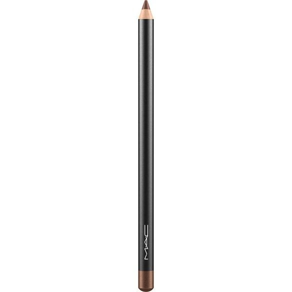
MAC
Eye Kohl Eyeliner
A silky, blendable pencil for a softer line. For a pencil, I go brown, since black pencils smudge.
Waterproof or not is your call. I go waterproof, because I have 9 million kids.
Quick win
Scrape the extra off the wand before you start.
Wipe the wand on the opening of the tube to remove the excess.
Take waterproof mascara off gently at night.
For events, add false lashes. To remove them, gently peel from the outer corner.
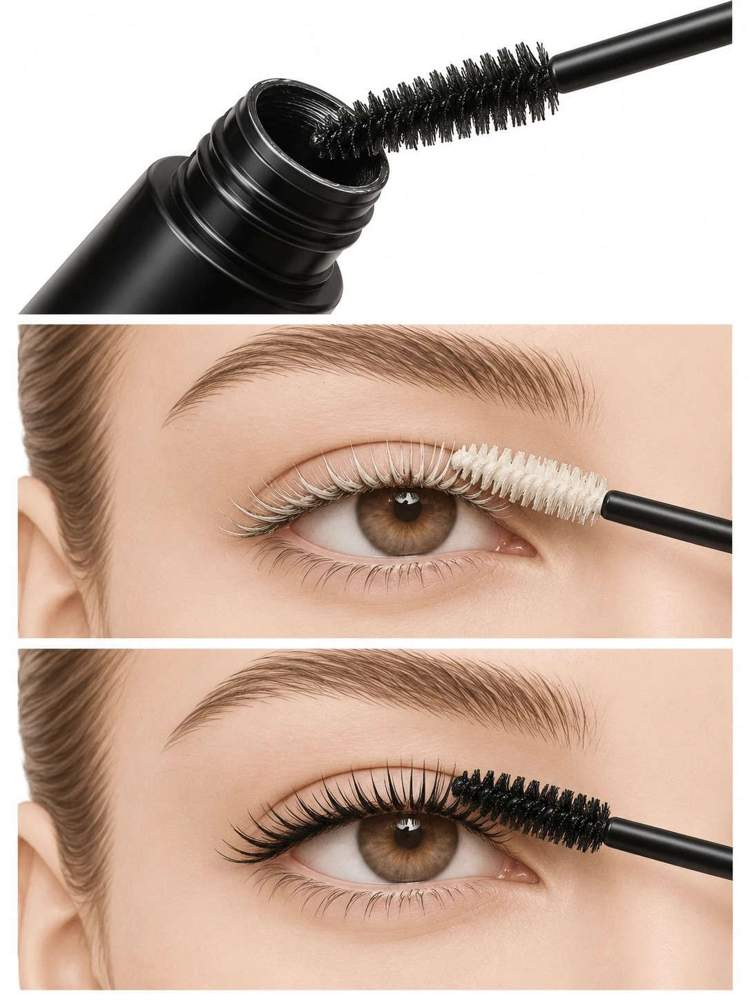
What the experts say: the American Academy of Ophthalmology says to toss eye makeup after three months, never share it, remove it all before bed, and save false lashes for special occasions.0,0
Pro tip
I’m obsessed with mascara primers. One under any mascara bulks up and lengthens your lashes.
My picks
In my bag now
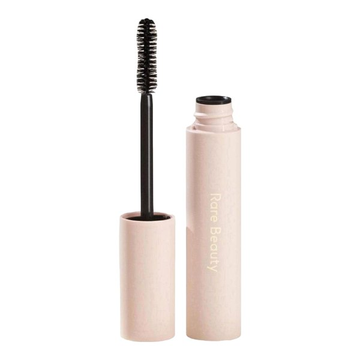
Rare Beauty
Perfect Strokes Volumizing Mascara
Lifts, lengthens, curls and volumizes, per the brand.
Volume
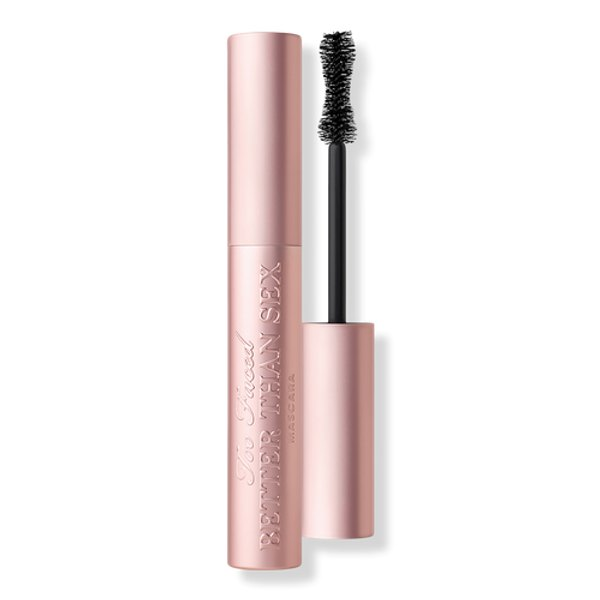
Too Faced
Better Than Sex Mascara
The mascara I recommended to my grandmother (insert embarrassed emoji). It truly is amazing. Not waterproof.
Drugstore
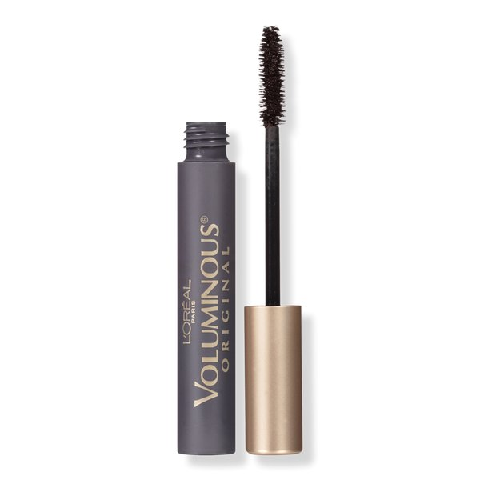
L’Oréal Paris
Voluminous Original Washable Mascara
A basic, fluffy brush that gives good length and volume. The washable one isn’t waterproof.
Lash primer
Tarte
Opening Act Lash Primer
My lash primer pick. The page says it boosts mascara length, curl and volume.
Brows frame your face and balance out everything else. Here is how to fill them, map their shape, and make them stay.
In this chapter
Fill your brows
Brow mapping
Your brows are sisters, not twins.
The one thing to remember
The Brows
Fill your brows
Girlfriend, your brows are sisters, not twins. Don’t stress about making them match perfectly.
Quick win
Start slightly in from the front, not right at it.
Start slightly in from the front of the brow, to avoid a harsh line.
Use small, hairlike strokes in the direction your hair grows, and work toward the tail.
Filled in with powder? Set it with a clear brow gel for the day.
Pick your color: a little darker than your hair, but not too dark. That’s how you get “Sharpie brows.”
Pro tip
Unless you’re blessed by the eyebrow gods, your brows are probably too short. I extend my clients’ brows 99% of the time. Not ready to reshape? Start by just filling them in.
My picks
Defined
Anastasia Beverly Hills
DIPBROW Pomade
So many shades, but once you find yours, you’ll LOVE it. It stays put. Use it with an angled brush.
In my bag now
Anastasia Beverly Hills
Brow Powder Duo
Two shades in one compact for a soft, natural ombre.
In my bag now
Anastasia Beverly Hills
MicroStroke Brow Pen
A fine brush-tip pen for natural-looking, hair-like strokes.
Where it starts: hold the brush straight up beside your nose.
Where it arches: angle it to the outside of your iris, looking straight ahead.
Where it ends: angle it from your nose past the outer corner of your eye.
What the experts say: experts differ a little on where the arch sits: some line it up with the outer edge of the iris, others with the pupil. Use this as a starting point.0,0,0
Pro tip
Use an angled brush, and run a Sigma fiber brush through as you go to soften the product. Want to wax, trim, tint and shape your own brows? Take my Eyebrow Masterclass.
Make them stay
In my bag now
L’Oréal Paris
Infallible 24H Brow Lamination Gel
Lifts and holds brows with no sticky residue, per the page.
Strong hold
Anastasia Beverly Hills
Brow Freeze Styling Wax
A clear wax with extreme hold and a natural finish.
Drugstore
e.l.f. Cosmetics
Brow Lift
A clear brow-shaping wax with long-lasting hold, at a drugstore price.
A primer under every lipstick, and a neutral gloss that goes with all of them.
Quick win
A neutral gloss goes with every nude lipstick.
Pro tip
Wearing a liquid lipstick? You MUST use a lip primer, or it will fade and your lips will dry out. Then add your lipstick, and gloss on top if you like.
Make it last
Primer
MAC
Prep + Prime Lip Primer
Under any lipstick, so your lips don’t dry out and the color lasts longer.
All day
MAC
Retro Matte Liquid Lipcolour in Burnt Spice
A creamy dirty rose that really does last all day. You MUST wear it with a lip primer.
Liner
Make Up For Ever
Artist Color Pencil Extreme Lip Liner
A matte lip liner, waterproof and smudge-proof, per the page.
Clean tools, clean skin. A few habits go a long way.
Quick win
Wash your brushes every week.
The sponge I swear by
I love the Original Beautyblender. Use it damp, and pick any color: they’re all the same.0 Amazon’s budget multipacks are AMAZING too. They sell out often, so keep checking back!
Use it damp
Beautyblender
The Original Makeup Sponge
Streak-free with little product waste, per the page. Use the pointed tip for concealer.
The bristles are too tight, and it leaves lines and an uneven finish.
Stippling brush: skip it
It goes on very light, but you get the same lines and uneven finish.
Kabuki: yes!
The happy medium. It applies evenly and blends as you go. My #1 is the Sigma F80, with the beauty blender a close second.
Keep it clean
Always use a clean brush or a clean sponge for foundation.
Wash your brushes every week.
Eye makeup has a clock: toss it after three months, and never share it.
Take it all off at night, eye makeup included.
What the experts say: the American Academy of Dermatology recommends cleaning makeup brushes weekly and not sharing them.0 The American Academy of Ophthalmology says to throw away eye makeup after three months.0
07
Chapter 7 of 8
Your Routine
The order matters.
Put it all together: the order that keeps every product working, my light and easy everyday face, and exactly what’s in my makeup bag right now.
In this chapter
The order of application
The everyday face
My current makeup bag
The order really does matter!
The one thing to remember
Your Routine
The order of application
This order lets each product do its job, keeps them out of each other’s way, and makes everything last the longest.
Quick win
Creams and liquids go on before powders.
Skin care and moisturizer (let it soak in)
Sunscreen
Foundation
Concealer
Bronzer (and contour)
Blush
Eyelid primer
Eyeshadow
Eyeliner
Brows
Setting powder
Lashes
Mascara
Lipstick or gloss
Setting spray (or just before mascara)
What the experts say: pros order these steps a little differently. What they agree on is that liquids and creams go on before powders, so a cream bronzer, contour or blush goes on before any powder.0,0,0
Your Routine
The everyday face and my current makeup bag
I want to be able to do my makeup in five minutes or less and know it’s going to stay put once it’s on. I like enough coverage to hide my hyperpigmentation, but I still want a little glow rather than a matte finish.
Quick win
Five minutes or less, and it stays put.
Start with your skin care and sunscreen. Then tinted moisturizer or a skin tint with a flat-top brush.
Translucent powder with a large powder brush.
Bronzer on the cheeks, top of the forehead and sides of the nose.
Eyeshadow primer, blended with your fingertips, then a soft brown in the crease.
Brows, then mascara.
A tinted lip balm, or the lip product of your choice!
What’s in my bag right now
These are the products I keep coming back to and have repurchased more than anything else in my makeup bag.
A weekly hair rhythm that saves you time, the questions I get asked most, and quick fixes for the most common hair problems.
In this chapter
My weekly hair rhythm
Hair FAQs and your hair type
Quick fixes
Regular cuts and the right products make every day easier.
The one thing to remember
Hair
My weekly hair rhythm
For years, I was the top-knot queen.
Quick win
Pre-book your haircuts every 5 to 6 weeks.
Once I pre-booked my appointments and went every five to six weeks instead of every few months, my hair was easier to style in less time. That alone was a game changer.
Day
My hair
Sunday night
Wash and blow-dry
Monday
Keep it straight, or curl it
Tuesday
Curl it, or touch up, plus dry shampoo
Wednesday
Touch up, plus dry shampoo
Wednesday night or Thursday
Shower and blow-dry
Friday
Curl or straighten
Saturday
Dry shampoo, and touch up the curls
Sunday during the day
Touch up the curls, plus more dry shampoo
Pro tip
Product is key. Dry shampoo and texture powder are the main products that help my hair last longer.
My dry shampoo and texture picks
Dry shampoo
Pureology
Style + Protect Refresh & Go Dry Shampoo
Dry shampoo is one of the two products that make my style last.
What the experts say: the American Academy of Dermatology says dry shampoo absorbs oil but doesn’t clean your scalp, so it shouldn’t replace washing.0
Hair
Hair FAQs and your hair type
The questions I get asked most.
Quick win
Know your hair type before you buy a product.
I work out and sweat a lot
Use dry shampoo before and after your workout, and again at night. After your workout, let your hair down to air-dry. If your scalp gets itchy, wash more often and use a clarifying shampoo.
Hair up or down at night?
Down. Tight ponytails and buns can damage your hair over time. If down bothers you, keep it loose with a scrunchie.
Thin, smooth, sleek hair
Skip smoothing shampoos; they weigh hair down and make it oily faster. Go volumizing, plus a texture spray once it’s dry.
Frizzy, poofy hair
Go smoothing or hydrating, plus a blow-dry serum or hair oil once it’s dry.
Pro tip
Ask your stylist which products to take home. They know your hair, they get regular product education, and they can teach you how to use them. And read the directions on the bottle!
What the experts say: a 2016 review in the Journal of the American Academy of Dermatology linked hairstyles that pull on the scalp, like tight ponytails, buns and braids, to traction alopecia, a type of hair loss.0
Hair
Quick fixes for common hair problems
Quick win
Never skip conditioner, even with oily hair.
Super oily hair
Shampoo twice, and condition every single time. Try a clarifying shampoo for your roots, and moisturize the mid-lengths and ends.
What the experts say: the American Academy of Dermatology says to wash oily hair more often, based on how much oil your scalp makes, focus shampoo on your scalp, and condition after every shampoo.0
Uncontrollable, unmanageable hair
A smoothing shampoo and conditioner, plus a smoothing product for your blowouts, like a blow-dry lotion or a smoothing oil.
Super thick hair that takes too long
Regular haircuts, and a smoothing blow-dry serum PLUS a blow-dry accelerator.
Super thin hair with no volume
A volumizing shampoo and conditioner, a root booster and a round brush. Once it’s done, a backcombing spray adds SO much volume.
For frizzy, poofy hair
Frizzy hair
Pureology
Hydrate Shampoo
Frizzy or poofy hair? Go hydrating.
Frizzy hair
Pureology
Hydrate Superfood Deep Treatment Mask
A deep treatment mask from the same hydrating line.
Numbers in the text point here. Techniques and health advice were checked against these sources on October 19, 2026 (the hair sources in November 2026). Where experts disagree, the guide says so. The product names, shades and notes in my own words come from my experience as a makeup artist.
Haskin and Aguh. All hairstyles are not created equal: what the dermatologist needs to know about black hairstyling practices and the risk of traction alopecia. Journal of the American Academy of Dermatology, 2016. News summary: sciencedaily.com/releases/2016/04/160427165334.htm
Product details marked “per the page” come from that product’s own retailer page, read on October 19, 2026. Product details change, so check the retailer for current shades, sizes and prices. Every product in this guide is one I recommend on my ShopMy page; these are the retailer pages those picks link to.
From hair and makeup for red carpets to styling brides and everything in between, I’ve mastered not just hair and makeup, but simplifying hair and makeup.
After 20 years in the beauty industry, I realized there was a huge gap. The internet is flooded with millions of YouTube videos and incredible artists teaching a wide variety of skills, looks and tricks, but none that simplify the process enough to teach everyday women how to manage their own beauty routine without the overwhelm.
So I set out to create online resources that any woman in the world could access at any time. Whether you’re the postpartum mama who needs a little boost to feel like herself again, or the woman who feels like she has lost herself over the years, I’ve broken down the beauty industry so it’s sustainable, simple and easy to put into practice at any stage of life.
with love, Jaime
Find more
My coaching and digital guides live at getmodernmomhq.com. The products I recommend: shopmy.us/shop/jmclaughlin.
Disclosure and copyright
Some of the links on my ShopMy page, in my videos and on my blog are affiliate links. If you buy through one, I earn a portion of the sale at no extra cost to you. It helps cover business costs and expenses.
This guide is a collection of knowledge from my personal experience in the beauty industry, checked against the sources listed at the back of this guide. The information is for general informational purposes only. While we try to keep it up to date and correct, there are no representations or warranties, express or implied, about the completeness, accuracy, reliability, suitability or availability of the information, products, services or related graphics for any purpose. Any use of this information is at your own risk.
There is no guarantee that these products will work for every person, or that they will work for you as they have for me or my clients. There is no guarantee that any person will or will not have a reaction to any of these products. I do not and will not accept any liability for any issues that arise from using any of these products. All products and application techniques are to be used at your own risk.
No part of this guide may be reproduced or transmitted in any form or by any means, electronic or mechanical, including printing for the purpose of sharing it with people who have not received it themselves, photocopying, recording, or any information storage and retrieval system, without written permission from the author.